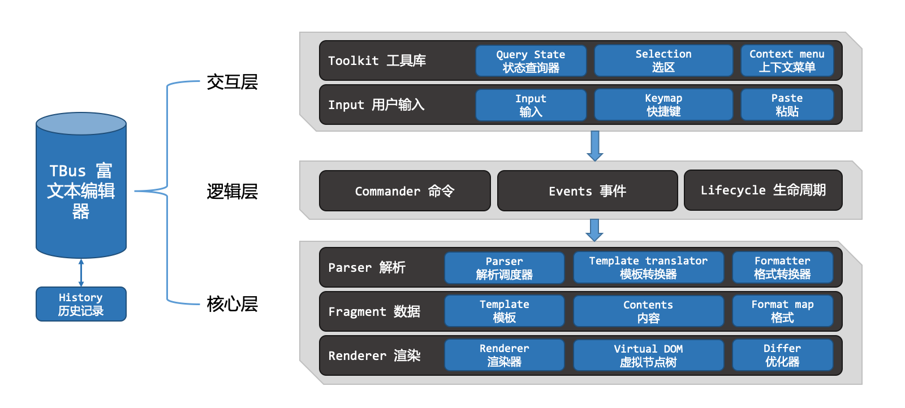
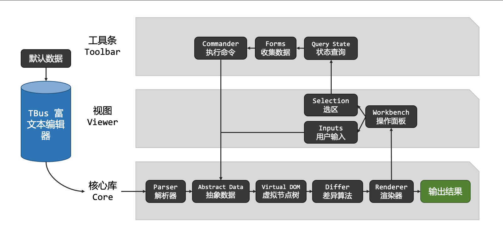
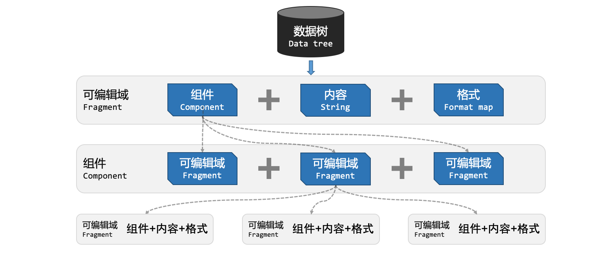

TBus 采用 MVC 设计，将 DOM 数据转换为抽象的 Fragment 对象，并通过自实现 Selection，隔离了浏览器的 Selection 及 Range 对象，使后续功能开发，再也不用关心不同浏览器的差异，整体设计架构如下：

TBus 设计之初就充分考虑了可定制性与扩展性，为了践行这一设计，TBus 核心模块只有组织与调度的能力，其它所有的功能都是只是遵循扩展接口的外部函数或类，也就是说，没有这些外部函数或类，TBus 核心模块就只剩空架子，完成不了任何事情。
在默认情况下，一般会调用 createEditor 函数来创建一个 TBus 实例。当我们查看 createEditor 函数的内容时会发现，该函数只是把一系列的接口实例等配置在可选项里而已。
TBus 并未采用 DOM 的 contentEditable 属性来实现编辑功能，所以 TBus 并不能直接编辑 HTML 内容，而是通过间接的方式，通过编辑抽象数据，并通过 Renderer 类渲染到 DOM 中。当初始化 TBus，或给 TBus 传入一段 HTML 文本时，TBus 会首先通过 Parser，把 HTML 转换为 TBus 定义的数据，然后再进行后续的操作。

